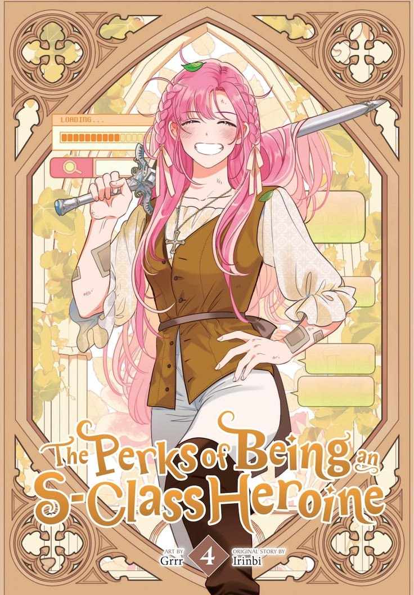

📖 The Bookmark
Never lose your place again. Log every series, chapter, and last-read date.
✦ a cozy corner for chronic readers ✦
Log your late-night binges, park the series you're not ready for, and crown the stories that wrecked you in the best way.
Three small rituals for the perpetually in-progress reader.
Never lose your place again. Log every series, chapter, and last-read date.
Park series in the slow-cooker and come back when the mood finally strikes.
Rank your favourites without apology. Five stars, three stars, all welcome.
The series everyone's whispering about this week.
Fresh chapters, hot off the press.

The Perks of Being an S-Class Heroine — quiet, atmospheric worldbuilding and the five-star favourite in our Hall of Fame.
🔍 See More Picks